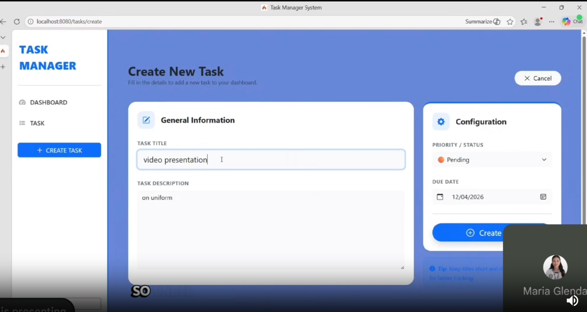

Project 01 • Web Application
Task Manager System

A web-based task management system that allows users to create and manage tasks. It includes task information such as the task title, description, status, priority, and due date.
I was one of the team members who worked on the coding of the system. I also helped test the project and fix errors found during development.